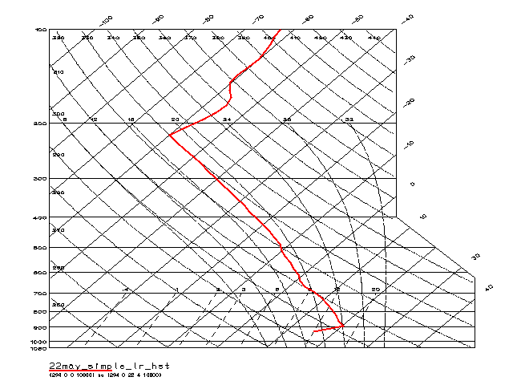

This file describes the procedures for creating a Skew T,
Log P profile of a temperature field.

Procedures:
- It is first necessary to input a data FILE. This activates the Window/Slicer Widget
(depicted below).
- At the Window/Slicer Widget, "fix" or "average" all coordinates
except the vertical coordinate Adjust the fixed coordate
values using the slicer bars until the appropriate horizontal
location and time values for the vertical profile are displayed (as
shown below).
Window/Slicer Widget
NOTE: The number of variables
that you allow to vary determines the number of dimensions
contained in the plot. For example, if two coordinates are "free",
then IVE will create a two-dimensional
plot. If you "fix" or "average" all coordinates, then a Value
Info Window is activated, displaying the value of the field at the
fixed point you have specified.
- Once you have fixed all coordinates except the vertical
coordinate, the IVE Main Window is automatically changed to a
one-dimensional mode. Make sure that "Skew T Plot" is displayed,
unless you wish to produce a 1D plot on a linear or logarithmic
scale (see Producing a 1D Scalar
Plot).
IVE Main Window in 1D Mode
- When Skew T Plot is selected, the Skew T Properties Window
appears automatically (pictured below). The Skew T properties
window allows you to specify the pressure component, temperature
component, and dew point component (optional). Any diagnostic
variable or simple mathematical computation using diagnostic
variables may be entered in each box. Note that IVE assumes that
the pressure component is in Pascals (N/m^2) and that temperature
and dew point components are in Kelvins (see also SKEWT_COMPONENTS).
Skew T Properties Window
- Finally, when all parameters have been set, click on "New Plot"
in the IVE Main Window to display the plot, or "Overlay Plot" to
overlay an existing plot (see PLOT and OVERLAY PLOT).
Example:
- Pictured below is a sample Skew T, Log P diagram produced by
IVE:

back to index
{kind=link}
{kind=link}